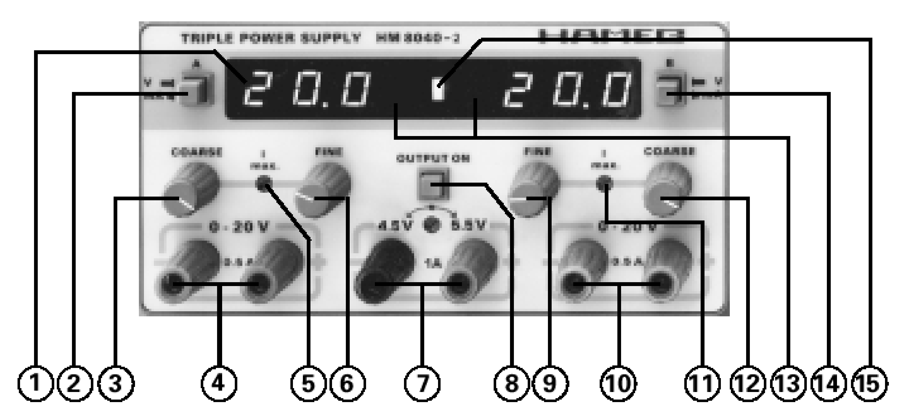

El equipo experimental que se usa en muchos laboratorios incluye un osciloscopio, un generador de funciones, un generador de corriente continua y un multı́metro digital. Una familiarización con este equipo es parte importante de una formación técnica.
El osciloscopio es una herramienta básica para registrar todo tipo de señales que previamente se han convertido en señales de tensión. Aunque aquı́ se hablará del osciloscopio HAMEG HM 303-4, su fundamento fı́sico es idéntico a cualquier otro osciloscopio. En todos los osciloscopios podemos distinguir tres partes: la pantalla, un canal de entrada (por el que se introduce la diferencia de potencial) y la base de tiempos.
Figura 11.1: Osciloscopio HAMEG HM - 303 - 4.
El aparato HAMEG HM 8030-5 dispone de un generador de funciones (parte superior del equipo de la figura 11.2).
image  |
Figura 11.2: Generador de funciones y fuente de tensión.
Un generador de funciones es un aparato que proporciona una señal de voltaje de alterna, con una frecuencia y una amplitud modificables a voluntad. En el aparato de que disponemos es, además, posible modificar la forma de la onda, obteniendo una onda sinusoidal, triangular o cuadrada al pulsar el botón del punto 6 de la figura 11.2.
La rueda del punto 3 y los botones del punto 4 permiten modificar la frecuencia de salida de la señal. Cada pulsación de los botones multiplica o divide por 10 la frecuencia de la señal, mientras que el mando permite modificar la señal en cantidades menores. La amplitud de la señal de salida puede regularse con el mando del punto 12. Además, la señal puede ser dividida por 10 pulsando uno de los botones del punto 11 y por 100 si están pulsados los dos simultáneamente.
Con el mando del punto 8 se regula el valor de una señal continua que se puede sumar a la señal alterna generada. Para que la suma tenga lugar es necesario que el botón del punto 9 esté pulsado. En general se dejará sin pulsar este botón.
Finalmente la señal se obtiene conectando la clavija coaxial (punto 10).
El equipo dispone de tres fuentes de corriente continua independientes (parte inferior de la figura 11.2). Las clavijas centrales corresponden a una fuente cuya diferencia de potencial entre bornes es fija y su valor está cerca de 5 V. Esta clavija se emplea sobre todo cuando se utilizan dispositivos electrónicos que pueden estropearse con tensiones altas, ya que casi todos los dispositivos electrónicos están pensados para trabajar con 5 V.
Las fuentes de tensión de los laterales permiten modificar el voltaje de salida mediante los mandos de los puntos 3, 9 y 6, 12. Los primeros sirven para hacer un ajuste aproximado y los segundos para un ajuste fino. En la pantalla del punto 1 se puede medir la diferencia de potencial y la intensidad generadas, a la izquierda para el canal izquierdo y en la derecha de la pantalla para el canal de la derecha. Para pasar de una medición a otra basta con pulsar el botón del punto 2 en la izquierda y el del punto 14 para el de la derecha. El error de medida de este aparato corresponde con el último decimal que proporciona.
No se debe nunca cortocircuitar el aparato. Si se conectan, sin ninguna resistencia intermedia, los bornes del generador de funciones o los de los generadores de tensión, el aparato corre el riesgo de dañarse, en algunos casos de un modo permanente.
Antes de conectar un circuito a la fuente de tensión hay que disminuir la tensión de salida al mı́nimo. Posteriormente se puede aumentar hasta el valor de trabajo deseado.
El multı́metro digital JH 2005 permite medir la diferencia de potencial y la intensidad en circuitos de corriente continua y alterna, ası́como medir la resistencia y algunas otras propiedades de los componentes electrónicos.
Figura 11.3: Multı́metro digital.
Para medir intensidades, tanto en continua (posición DCA del instrumento de la figura 11.3) como en corriente alterna (ACA), es necesario conectar uno de los cables de entrada en la clavija COM y el otro en la conexión A. Además el multı́metro deberá ponerse en serie con el circuito empleado, de manera que toda la corriente que circule por el circuito pase a través del multı́metro.
Para medir diferencias de potencial, tanto en continua (DCV) como en alterna (ACV), es necesario colocar una clavija en COM y la otra en V. En este caso el multı́metro deberá ponerse en paralelo con el elemento en el que queremos medir la diferencia de potencial.
Para medir la resistencia de un elemento es necesario que éste esté desconectado del circuito. Los cables deberán estar en las clavijas COM y V y la rueda se pondrá en la zona de medida de resistencias .
En todos los aparatos de medida hay que empezar utilizando las escalas mayores y posteriormente se va reduciendo hasta que tenemos una medida con un número de decimales suficiente. Los instrumentos digitales suelen ser más resistentes que los analógicos, pero también se pueden estropear si se les pone en una escala menor que la de la señal. Los amperímetros suelen ser los instrumentos más delicados.
El error de medida de este aparato corresponde con el último decimal que proporciona.
Se visualizarán en el osciloscopio las señales suministradas por el generador de frecuencias (señales sinusoidales). Para ello hay que fijar la frecuencia deseada en el generador y conectar sus salidas a las entradas del osciloscopio en cualquiera de sus canales. La señal aparecerá en la pantalla en forma de onda sinusoidal y se podrá medir en ella su periodo y de ahí obtener su frecuencia . Esta es una forma de comprobar la precisión de la escala del generador de frecuencias.
Para medir el voltaje se ha de tener en cuenta que , siendo el valor de pico (es decir el voltaje entre el punto medio y la máxima amplitud) y el voltaje eficaz, que es el que se medirı́a con un voltı́metro. Para obtener es recomendable medir el voltaje pico-pico y dividirlo por dos. Ver la figura 11.4, donde se esquematiza la medida de una diferencia de potencial de alterna sinusoidal.
Figura 11.4: Esquema de las distintas diferencias de potencial que se pueden medir con un osciloscopio.
Frecuencia | Perı́odo | Error del | Frecuencia | Error de la |
introducida (Hz) | medido (s) | perı́odo (s) | calculada (Hz) | frecuencia (Hz) |
50 | ||||
100 | ||||
500 | ||||
Posición del | Voltaje | Error | Voltaje | Error | Voltaje | Error |
generador | pico-pico | de pico | eficaz | |||